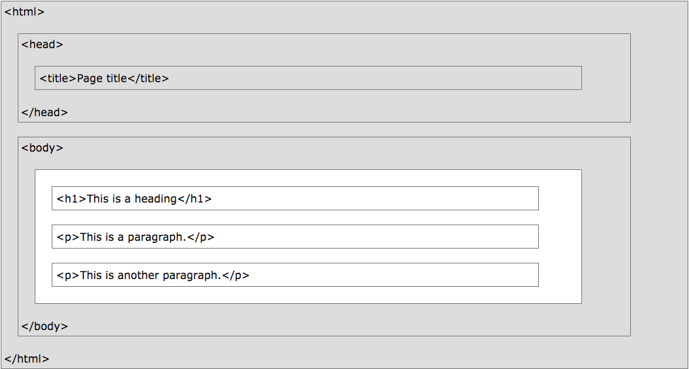

CMPT 165
Introduction to the Internet
and the World Wide Web
Unit2: Markup and HTML
In this unit you will learn the following
- Create web pages in HTML with a text editor, following the rules of XHTML syntax and using appropriate HTML tags
- Create a web page that includes links and images
- List some common HTML tags
- Use relative URLs to refer to resources on a website
Topics
- Text Files and Markup
- HTML and Tags
- Attributes and More
- Semantic Markup
- Validating HTML
- URLs: Links and Images
- Character References
Markup Languages
- A markup language is a way to describe a document for a computer using only plain text
- LaTeX is a markup language often used for scientific and mathematical documents
This is a sentence with an \emph{emphasized} word, and a formula: \(x^2 - x + 1\).
 * image from http://www.cs.sfu.ca/CourseCentral/165/common/study-guide/figures/latex.png
* image from http://www.cs.sfu.ca/CourseCentral/165/common/study-guide/figures/latex.png
Same Example in HTML
<p>This is a sentence with an <em>emphasized</em> word,
and a formula: x<sup>2</sup> - x + 1.</p>
This is a sentence with an emphasized word,
and a formula: x2 - x + 1.
All of HTML, CSS, and JavaScript files are
just Text Files with code in them
Text Files and Text Editors
A Text File is a generic term for a file that contains only characters
- they could be for storing data (like CSV files for spreadsheet data)
- or could be documents (like LaTeX or HTML files)
- or could be programs (in JavaScript, Python, Java, C, …)
In order to work with text files, you will need a program called a text editor
HTML files are edited with a text editor:
just make sure you save the file with the extension .html
(i.e. name it something like mypage.html)
The History of HTML [*]
HTML 1.0
- the first release of HTML to the world
- not many people were involved in website creation at the time, and the language was very limiting
- what it could to was to get some simple text onto the web
* content from http://www.yourhtmlsource.com/starthere/historyofhtml.html
The History of HTML [*]
HTML 2.0
- included everything from the original 1.0 specifications but added a few new features to the mix
- it was the standard for website design until Jan. 1997
- defined many core HTML features for the first time
* content from http://www.yourhtmlsource.com/starthere/historyofhtml.html
The History of HTML [*]
HTML 3.0
- began with the introduction of new proprietary tags and attributes into Netscape Navigator browser
- other browsers began to act differently on the same set of tags
- Was abandoned due to the slow speed of browser companies to implement the full set of new extensions
* content from http://www.yourhtmlsource.com/starthere/historyofhtml.html
The History of HTML
HTML 3.2
- world Wide Web Consortium (abbreviated to the W3C) was founded in 1994
- W3C introduced its first web developement standard as WILBUR or HTML 3.2
- most of the extensions tags that had been introduced by Netscape did not make it into these new standards
- it soon caught on and became the official standard in Jan. 1997, and today practically all browsers support it fully
* content from http://www.yourhtmlsource.com/starthere/historyofhtml.html
The History of HTML
HTML 4.0- most of its new functionality set came from the ill-fated HTML 3.0 specs and old tags
- the focus was on internationalisation, and support for HTML’s new supporting presentational language, cascading stylesheets
- was recommended by the W3C in Dec. 1997 and became the official standard in Apr. 1998
* content from http://www.yourhtmlsource.com/starthere/historyofhtml.html
The History of HTML
XHTML 1.0
- W3C recommended it as the web developement standard in Jan. 2000
- it inherits from both XML and HTML
- there were not many new or deprecated tags and attributes in XHTML
- it is mainly just a new set of coding rules
- you have to close every tag you open!
* content from http://www.yourhtmlsource.com/starthere/historyofhtml.html
The History of HTML
HTML 5.0
- W3C was trying to introduce XHTML 2.0
- Web Hypertext Application Technology Working Group (WHATWG) developed a new specification set over HTML 4.0
- W3C disconiued XHTML 2.0 and announced HTML 5.0 as the new standard on Sep. 2014
* content from http://www.yourhtmlsource.com/starthere/historyofhtml.html
Now let's see what an HTML document looks like
HTML Page Structure
 * image from https://www.w3schools.com/html/html_intro.aspHTML Tags
the things wrapped in triangular braces
(the < … > characters) are called tags
There are both opening tags and closing tags
(or starting tags and ending tags)
which come in pairs to enclose pieces of content
An HTML Page Example
Basic Tags
<!DOCTYPE html>- This isn't really a tag or an element, it is the document type declaration (or doctype) for the page. This doctype indicates that the page is HTML5. The doctype doesn't have a closing version: it's the first thing in an
.htmlfile and stands alone. <html>…</html>- This element contains entire HTML page. It should be the first tag to start (after the doctype) and last to close.
<head>…</head>- This element contains information about the page (as opposed to content of the page). For now, it will hold only the
<title>and<meta>tags. <title>…</title>- This element gives the main title for the page. It gives the main title for the document, which is used in the title bar and for bookmarks to the page.
<meta charset="UTF-8" />- This tag tells the browser about the “character encoding” for this document. The details aren't important now, but it's a property of how the text file is encoded when it is saved. This
<meta>tag should be in every HTML file like this.You may have also noticed that it has no closing tag, and that there's some extra stuff in the tag. We will get to that very soon…
<body>…</body>- Finally, this element contains the actual content of the page: the part that is displayed in the main browser window. Most of the new tags we learn will go somewhere in the
<body>.
An HTML Page Example (Extended)
More Tags
<h1>- This tag is used for a “level 1” heading. That is, it's the most important heading on the page. Typically, every page should start with an
<h1>that has the same contents as the<title>: the main title for the page. <em>- This tag indicates emphasized text: some important word or phrase in the sentence. An
<em>must go inside a paragraph (or heading, or other “block-level” element as we'll see later). <ul>- This tag describes an unordered list. That is, it contains a list of things where the order isn't important. The
<ul>element (and the ordered list version<ol>, or menu list<menu>) can't contain text the way a<p>can: it can only contain<li>elements. <li>- These are the only thing that can go in a
<ul>or<ol>element (and can only be inside one of those elements). They denote list items.
Whitespace
- the line breaks, spaces, and other formatting in the HTML code have no effect of the display in the browser
- if you press enter a few times to insert a blank link in the HTML, it will not change the appearance in the browser
- you must use tags (and later we'll see CSS styles) to change the way things look